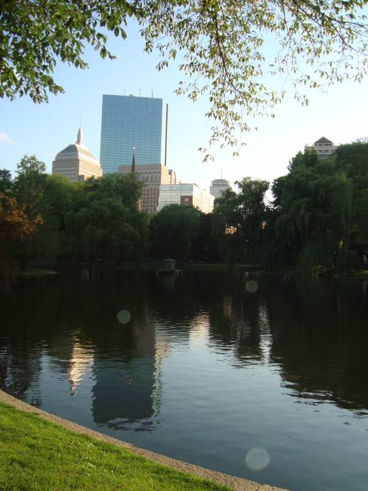

Ani nevím, jestli je vůbec potřeba k dnešku něco extra vyprávět - strávíme ho totiž celkem obligátním způsobem, jak už to tak na dovolené poslední den chodí - nakupováním drobností a suvenýrů pro nás a pro rodinu. Z postele se ještě celí vyčerpaní z prachu a špíny velkoměsta (už vím, kde musel vzniknout tento slovní obrat :D) vybatolíme až kolem 11, takže si dáme sraz ve městě s Lukem a rovnou se vydáme do místní restaurace na pizzu. Než nám ji přinesou, dopíšu zbytek pohlednic, které jsem ještě nestihla, a předám je Lukovi k odeslání - na poště je totiž dlouhatánská fronta a otevřené jen jedno okýnko. Čekat se mi tam opravdu nechce, tudíž pokud vám pohled nedojde včas nebo vůbec, víte, na koho se obrátit s výčitkami :D !!!
Odpoledne se naposledy vydáme do Bostonu za řekou. Už se mi opravdu nehorázně stýská a těším se domů, a tak je jedinou možností, jak si spravit náladu, pořádné nakupování :D. Musím říct, že na naše poměry je tu obecně dost draho a netýká se to jen oblečení, ale především jídla. Radši si ale odtrhnu od úst, než abych si z Amériky nedovezla žádný hadřík :D. Proto neomylně zamířím do vyhlídnuté Anthropologie, kde za krásnou sukni a ještě krásnější svetřík vysolím tak nehorázné peníze, za které bych se doma v ČR oblíkla od hlavy až k patě - no ale té radosti z toho :D !! Při zkoušení v kabince si připadám jako princezna, naberu si plnou náruč hadříků a nechám se obskakovat prodavačkou, která mě oslovuje jménem :D a pořád se zajímá, jestli něco nepotřebuju nebo nechci přinést. V koutku oka zamáčknu slzu nad krásnýma šatičkama na figuríně, ale nechci si je radši ani zkoušet - co kdyby mi třeba padly :D ??
Pak se vydáme ještě do obchoďáku Macy’s poblíž Park street, kde má prozměnu pár hadříku vyhlídnutých mamka. Zkoušení jí trvá tak dlouho, že z nudy procházím mezi regály s oblečením a musím si dávat sakra pozor, abych se tu neztratila :D…Oblečení mi tu přijde celkem nudný (oddíl se společenskýma šatičkama obcházím velikým obloukem, už nemám nárok :D…), většinou jsou stejně šité na objemnější tvary a jediné S tričko, které si vyzkouším, bych mohla použít klidně jako noční košili :D…Co mi ale padne do oka je regál s posledními kusy botiček - je mezi nimi i několik Conversek, které jsem si původně z USA chtěla přivézt, ale během chození po obchodech jsem postupně zjistila, že tu stojí skoro stejně jako u nás a vzory jsou vpodstatě úplně totožné. V New Yorku jsem našla nejlevnější za 30 dolarů, ale slušné barvy měly dost přebrané velikosti. Tady mi do oka padnou hned dvoje a obě mají velikost 4 :-). Rozhoduju se mezi růžovýma a černýma, které mají pogumovaný barevný potisk - nakonec mi příjdou hleďavější ty růžové ( a budou mi ladit k deštníku :D…ano žena si důvod vždycky najde :D)…a neberte to za ty prachy :D !!!
Večer nás ještě naposledy příjde na privát navštívit Luk. Domlouváme se, v kolik zítra vyrazíme na letiště a kdy nám doveze kufr s jeho věcma a oblek, který budeme brát domů. Navzdory celodennímu běhání po obchodech nejsem vůbec unavená a trvá mi dlouho, než se mi podaří usnout - už se zkrátka zase ozývá cestovní horečka. A úplně ze všeho nejvíc si přeju, aby už bylo zítra a já stála oběma nohama na evropském kontinentě :o)…

Podvečer v Bostonu